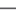

CTU Open Contest, 2011
| 1. | cteam04 - MUNI: David Klaska, Marek Klucar, Petr Pilar | 12:57:10 |       ![]](images/right.gif) |
(6 accepted) | cteam064.tar.gz |
| 2. | cteam13 - UNIBA: Vladimir Boza, Peter Fulla, Jan Hozza | 09:32:05 |  |
(5 accepted) | cteam073.tar.gz |
| 3. | cteam17 - UNIBA: Michal Anderle, Michal Petrucha, Marek Spano | 11:23:38 | |
(5 accepted) | cteam077.tar.gz |
| 4. | cteam10 - CUNI: Michal Danilak, Filip Hlasek, Jakub Zika | 13:12:26 |  |
(5 accepted) | cteam010.tar.gz |
| 5. | cteam06 - MUNI: Ondrej Bouda, Tomas Kotula, Zuzana Petruchova | 14:56:20 | |
(5 accepted) | cteam066.tar.gz |
| 6. | cteam11 - UNIBA: Pavel Labath, Ivan Labath, Marek Zeman | 03:29:42 | |
(4 accepted) | cteam071.tar.gz |
| 7. | cteam22 - STUBA: Jakub Kriz, Ondrej Proksa, Marius Sajgalik | 21:03:32 | |
(4 accepted) | cteam082.tar.gz |
| 8. | cteam59 - UPJS: Maria Harcarufkova, Jan Jergus, Jakub Morvay | 03:14:58 | |
(3 accepted) | cteam119.tar.gz |
| 9. | cteam12 - CUNI: Vlastimil Dort, Karel Tesar, Pavel Vesely | 04:56:52 | |
(3 accepted) | cteam012.tar.gz |
| 10. | cteam61 - VSB: Petr Bartusek, Martin Rasik, Jakub Vonsovsky | 12:52:01 | |
(3 accepted) | cteam121.tar.gz |
| 11. | cteam07 - MUNI: Petr Dluhos, Viktor Hahn, Jan Koscak | 16:26:53 | |
(3 accepted) | cteam067.tar.gz |
| 12. | cteam30 - CVUTi: Jan Baier | 01:21:09 | |
(2 accepted) | cteam030.tar.gz |
| 13. | cteam49 - ZCU: Zuzana Buresova, Petr Kellnhofer, Jakub Vit | 01:54:52 | |
(2 accepted) | cteam109.tar.gz |
| 14. | cteam20 - CUNI: Oskar Hybl, Oskar Maxa, Vojtech Vondra | 02:53:51 | |
(2 accepted) | cteam020.tar.gz |
| 15. | cteam05 - CVUTi: Michael Blaha, Jan Bradac, Radek Tomsu | 03:09:36 | |
(2 accepted) | cteam005.tar.gz |
| 16. | cteam83 - UNIZA: Martin Bulik, Stanislav Galfy, Matus Hovanec | 04:02:23 | |
(2 accepted) | cteam143.tar.gz |
| 17. | cteam67 - VSB: Hamid Khairy, Elena Lavlinskaya, David Macek | 04:27:47 | |
(2 accepted) | cteam127.tar.gz |
| 18. | cteam24 - CVUTe: Radek Holy, Tomas Tunys | 04:47:52 | |
(2 accepted) | cteam024.tar.gz |
| 19. | cteam05 - MUNI: Tomas Brukner, Richard Janik, Jan Jilek | 05:13:30 | |
(2 accepted) | cteam065.tar.gz |
| 20. | cteam86 - UNIZA: Jakub Berthoty, Milos Korenciak, Miroslav Kvassay | 05:26:23 | |
(2 accepted) | cteam146.tar.gz |
| 21. | cteam03 - CVUTi: Petr Kubista, Ondrej Kuzela, David Zalesky | 05:37:29 | |
(2 accepted) | cteam003.tar.gz |
| 22. | cteam41 - CVUTi: Martin Ovesny, Ales Podskalsky | 06:11:42 | |
(2 accepted) | cteam041.tar.gz |
| 23. | cteam26 - STUBA: Peter Kmec, Matej Vargovcik | 06:28:09 | |
(2 accepted) | cteam086.tar.gz |
| 24. | cteam54 - CVUTi: Martin Chovanec, Adam Heinrich, Martin Zak | 06:31:34 | |
(2 accepted) | cteam054.tar.gz |
| 25. | cteam42 - ZCU: Jan Moulis, Vaclav Rajtmajer, Kamil Rendl | 06:50:16 | |
(2 accepted) | cteam102.tar.gz |
| 26. | cteam03 - MUNI: Jiri Danek, Radim Hatlapatka, Marek Tomastik | 06:59:50 | |
(2 accepted) | cteam063.tar.gz |
| 27. | cteam49 - CVUTi: Jan Jecmen, Michal Kvasnicka, Miroslav Lhotan | 07:06:36 | |
(2 accepted) | cteam049.tar.gz |
| 28. | cteam51 - ZCU: Oldrich Petrik, Vaclav Purchart, Roman Soukal | 07:14:00 | |
(2 accepted) | cteam111.tar.gz |
| 29. | cteam38 - CVUTi: Michal Balda, David Bilik, Vojtech Miksu | 07:15:31 | |
(2 accepted) | cteam038.tar.gz |
| 30. | cteam44 - CVUTi: Michal Peroutka, Petr Sefcik, Martin Svorc | 07:40:05 | |
(2 accepted) | cteam044.tar.gz |
| 31. | cteam29 - CVUTi: Vojtech Haur, Tomas Kuzin, Michal Vlasak | 07:58:04 | |
(2 accepted) | cteam029.tar.gz |
| 32. | cteam10 - STUBA: Lubos Demovic, Martin Konopka, Ondrej Kuzmik | 08:56:43 | |
(2 accepted) | cteam070.tar.gz |
| 33. | cteam11 - CVUTi: Petr Gregor, Matej Lang, Vit Stekly | 09:47:48 | |
(2 accepted) | cteam011.tar.gz |
| 34. | cteam14 - STUBA: Miroslav Hudak, Filip Pakan, Marek Tomco | 10:23:25 | |
(2 accepted) | cteam074.tar.gz |
| 35. | cteam18 - CUNI: Miroslav Chomut, Marcel Kikta, Ondrej Klejch | 11:47:17 | |
(2 accepted) | cteam018.tar.gz |
| 36. | cteam58 - UPJS: Vladimir Chabal, Matej Kopernicky, Matej Nikorovic | 00:35:11 | |
(1 accepted) | cteam118.tar.gz |
| 37. | cteam72 - VSB: Jakub Gerlich, Lukas Maly, Ondrej Zjevik | 00:36:04 | |
(1 accepted) | cteam132.tar.gz |
| 38. | cteam04 - CUNI: Jan Bok, Radovan Jankovic, Peter Zeman | 00:48:03 | |
(1 accepted) | cteam004.tar.gz |
| 39. | cteam15 - CVUTi: Tomas Budnikov, David Klingenberg, Michal Kopp | 00:50:28 | |
(1 accepted) | cteam015.tar.gz |
| 40. | cteam23 - CVUTi: Filip Mestanek, Antonin Smrcek, Adam Zdara | 00:52:56 | |
(1 accepted) | cteam023.tar.gz |
| 41. | cteam26 - CVUTe: Radek Masek, Radek Podgorny, Jiri Pokorny | 00:55:13 | |
(1 accepted) | cteam026.tar.gz |
| 42. | cteam80 - UNIZA: Martin Bros, Matej Istenik, Jozef Staffen | 00:55:27 | |
(1 accepted) | cteam140.tar.gz |
| 43. | cteam53 - ZCU: Martin Blaha, Antonin Neumann | 00:58:18 | |
(1 accepted) | cteam113.tar.gz |
| 44. | cteam40 - CVUTi: Jakub Korbel, Jakub Majdl, Martin Prochazka | 00:59:45 | |
(1 accepted) | cteam040.tar.gz |
| 45. | cteam09 - MUNI: Jakub Barbierik, Jan Gabela, Ivan Gurtler | 01:01:55 | |
(1 accepted) | cteam069.tar.gz |
| 46. | cteam47 - ZCU: David Steinberger, Jan Strnadek, Vaclav Stengl | 01:09:09 | |
(1 accepted) | cteam107.tar.gz |
| 47. | cteam60 - VSB: Martin Mrovec, Josef Raska, Vaclav Ryska | 01:13:27 | |
(1 accepted) | cteam120.tar.gz |
| 48. | cteam31 - CVUTi: Ondrej Pelech, Ondrej Perutka, Jan Silhavy | 01:17:40 | |
(1 accepted) | cteam031.tar.gz |
| 49. | cteam74 - VSB: Alexandr Jegorov, Vaclav Skarka, Dalibor Vanicek | 01:26:45 | |
(1 accepted) | cteam134.tar.gz |
| 50. | cteam85 - UNIZA: Juraj Branicky, Richard Derer, Vladimir Smatanik | 01:32:15 | |
(1 accepted) | cteam145.tar.gz |
| 51. | cteam28 - CVUTe: Miroslav Kucera, Ales Kucik, Daniel Meszaros | 01:36:05 | |
(1 accepted) | cteam028.tar.gz |
| 52. | cteam82 - UNIZA: Janka Pakosova, Lukas Vasko, Peter Cervienka | 01:41:02 | |
(1 accepted) | cteam142.tar.gz |
| 53. | cteam09 - CVUTi: Jan Kosar, Matej Kunte, Jakub Cervenka | 01:44:36 | |
(1 accepted) | cteam009.tar.gz |
| 54. | cteam25 - CVUTe: Petr Lessner, Tomas Nouza, Martin Pospisil | 01:47:49 | |
(1 accepted) | cteam025.tar.gz |
| 55. | cteam32 - CVUTe: Erik Derner, Karel Horak, Tomas Krupka | 01:52:52 | |
(1 accepted) | cteam032.tar.gz |
| 56. | cteam45 - ZCU: Daniel Kunes, Jindra Pavlikova, Petr Vogl | 01:59:06 | |
(1 accepted) | cteam105.tar.gz |
| 57. | cteam56 - CVUTi: Martin Labut, Lukas Sedlacek, Ondrej Zaruba | 02:09:46 | |
(1 accepted) | cteam056.tar.gz |
| 58. | cteam38 - UMB: Martin Brzula, Tomas Janikovic, Michal Povinsky | 02:13:52 | |
(1 accepted) | cteam098.tar.gz |
| 59. | cteam58 - CVUTi: Tibor Szolar, Vojtech Tosovsky, Jan Turon | 02:19:47 | |
(1 accepted) | cteam058.tar.gz |
| 60. | cteam35 - CVUTi: Michal Becka, Ondrej Fiedler, Lukas Hrbek | 02:22:31 | |
(1 accepted) | cteam035.tar.gz |
| 61. | cteam22 - CVUTi: Viktor Podhajecky, Marian Such, Jan Vlnas | 02:22:34 | |
(1 accepted) | cteam022.tar.gz |
| 62. | cteam42 - CVUTi: Pavel Kocka, Martin Matejek, Jan Nohavica | 02:26:35 | |
(1 accepted) | cteam042.tar.gz |
| 63. | cteam44 - ZCU: Vojtech Kosar, Katerina Stollova, Michal Zak | 02:27:41 | |
(1 accepted) | cteam104.tar.gz |
| 64. | cteam84 - UNIZA: Martin Berzak, Filip Franc, Marian Svalec | 02:27:54 | |
(1 accepted) | cteam144.tar.gz |
| 65. | cteam59 - CVUTe: Martin Hanak, Michal Knizek, Karel Lenc | 02:33:54 | |
(1 accepted) | cteam059.tar.gz |
| 66. | cteam08 - CUNI: David Krska, Filip Matzner, Adam Vyskovsky | 02:42:30 | |
(1 accepted) | cteam008.tar.gz |
| 67. | cteam53 - CVUTi: Simon Hlavac, Jan Hnizdil, Eliska Sestakova | 02:44:25 | |
(1 accepted) | cteam053.tar.gz |
| 68. | cteam64 - VSB: Matej Cencik, Artur Iwan, Daniel Krpelik | 02:46:05 | |
(1 accepted) | cteam124.tar.gz |
| 69. | cteam81 - UNIZA: Tomas Istenik, Miroslav Louma, Jan Svrcek | 03:17:31 | |
(1 accepted) | cteam141.tar.gz |
| 70. | cteam48 - ZCU: Martin Bajer, Pavel Kocabek, Vaclav Lorenc | 03:29:56 | |
(1 accepted) | cteam108.tar.gz |
| 71. | cteam51 - CVUTi: David Kocik, Michal Roch, David Solc | 03:40:41 | |
(1 accepted) | cteam051.tar.gz |
| 72. | cteam43 - CVUTe: Tomas Baca, Viktor Chlumsky, Antonin Novak | 03:57:00 | |
(1 accepted) | cteam043.tar.gz |
| 73. | cteam34 - CVUTi: Jiri Brabec, Jan Danihelka, Jan Kratochvil | 04:01:07 | |
(1 accepted) | cteam034.tar.gz |
| 74. | cteam71 - VSB: Marek Zaskodny | 04:10:46 | |
(1 accepted) | cteam131.tar.gz |
| 75. | cteam31 - UMB: Miroslav Dzurik, Stanislav Herman, Michal Krnac | 04:12:25 | |
(1 accepted) | cteam091.tar.gz |
| 76. | cteam69 - VSB: Jan Freiherr, Pavel Szypka | 04:20:50 | |
(1 accepted) | cteam129.tar.gz |
| 77. | cteam07 - CVUTi: Antonin Kloboucnik, Tomas Krabac, Jan Navara | 04:27:57 | |
(1 accepted) | cteam007.tar.gz |
| 78. | cteam27 - CVUTi: Milan Blazek, Vaclav Boch, Lukas Lendvorsky | 04:37:10 | |
(1 accepted) | cteam027.tar.gz |
| 79. | cteam34 - UMB: Frantisek Hudak, Matus Sliva, Sona Volentierova | 04:57:34 | |
(1 accepted) | cteam094.tar.gz |
| 80. | cteam37 - CVUTe: Vladimir Kloucek, Jiri Zamazal, Karel Cemus | 05:01:48 | |
(1 accepted) | cteam037.tar.gz |
| 81. | cteam19 - CVUTi: Lukas Dvorak, Jakub Vojacek, Filip Vondrasek | 05:16:55 | |
(1 accepted) | cteam019.tar.gz |
| 82. | cteam21 - CVUTi: Jiri Fajman, Jiri Muller, Martin Novak | 05:24:12 | |
(1 accepted) | cteam021.tar.gz |
| 83. | cteam46 - CVUTi: Branislav Havrila, Tomas Kaniok, Filip Tvrdon | 05:27:53 | |
(1 accepted) | cteam046.tar.gz |
| 84. | cteam08 - MUNI: Tomas Babej, Marek Dernar, Monika Michalovova | 05:28:53 | |
(1 accepted) | cteam068.tar.gz |
| 85. | cteam13 - CVUTi: Robin Oburka, Jaroslav Ramba, Lukas Sokol | 05:31:15 | |
(1 accepted) | cteam013.tar.gz |
| 86. | cteam55 - CVUTi: Kamil Falta, Jan Horky, Lukas Janecek | 06:06:04 | |
(1 accepted) | cteam055.tar.gz |
| 87. | cteam52 - ZCU: Tomas Kratochvil, Lukas Lemes, Tomas Majer | 07:09:56 | |
(1 accepted) | cteam112.tar.gz |
| cteam00 - CVUTe: Lidziya Pabalavets | 00:00:00 | |
(0 accepted) | cteam000.tar.gz | |
| cteam01 - CVUTi: Jan Nepras, Karel Rozhon, Jan Recinsky | 00:00:00 | |
(0 accepted) | cteam001.tar.gz | |
| cteam06 - CUNI: Jozef Gandzala, Tobias Hudec, Pavol Rohar | 00:00:00 | |
(0 accepted) | cteam006.tar.gz | |
| cteam14 - CUNI: Michal Bilansky, Jaroslav Brabec, Tomas Svab | 00:00:00 | |
(0 accepted) | cteam014.tar.gz | |
| cteam16 - CUNI: Jaroslav Bohmer, Michal Klein, Peter Nikodem | 00:00:00 | |
(0 accepted) | cteam016.tar.gz | |
| cteam33 - CVUTi: Josef Donoval, Filip Drapalik, Ondrej Kapucian | 00:00:00 | |
(0 accepted) | cteam033.tar.gz | |
| cteam36 - CVUTi: Jan Friedl, Ondrej Mraz, Martin Polivka | 00:00:00 | |
(0 accepted) | cteam036.tar.gz | |
| cteam45 - CVUTi: Jakub Doucek, Juraj Juraska, Jakub Zitny | 00:00:00 | |
(0 accepted) | cteam045.tar.gz | |
| cteam48 - CVUTi: Jan Milik, Tomas Peterka, Dominik Vesely | 00:00:00 | |
(0 accepted) | cteam048.tar.gz | |
| cteam57 - CVUTi: Vojtech Bartos, Jiri Malina, Tomas Pokorny | 00:00:00 | |
(0 accepted) | cteam057.tar.gz | |
| cteam60 - CVUTi: Jakub Jenca, Martin Klepac, Ivan Kosdy | 00:00:00 | |
(0 accepted) | cteam060.tar.gz | |
| cteam61 - CVUTi: Tomas Babjak, Roman Palkoci, Julius Soltes | 00:00:00 | |
(0 accepted) | cteam061.tar.gz | |
| cteam12 - STUBA: Roman Huba | 00:00:00 | |
(0 accepted) | cteam072.tar.gz | |
| cteam15 - UNIBA: Tomas Belan, Peter Herman, Martin Sramek | 00:00:00 | |
(0 accepted) | cteam075.tar.gz | |
| cteam16 - STUBA: Ondrej Fabry, Filip Mazan, Filip Soltes | 00:00:00 | |
(0 accepted) | cteam076.tar.gz | |
| cteam18 - STUBA: Juraj Petrik, Juraj Vincur | 00:00:00 | |
(0 accepted) | cteam078.tar.gz | |
| cteam19 - STUBA: Rudolf Brisuda, Tomas Takac, Lubomir Vnenk | 00:00:00 | |
(0 accepted) | cteam079.tar.gz | |
| cteam20 - STUBA: Miroslav Vojtus, Andrej Zeleznak | 00:00:00 | |
(0 accepted) | cteam080.tar.gz | |
| cteam21 - STUBA: Lukas Cader, Michal Sevcik, Matej Stetiar | 00:00:00 | |
(0 accepted) | cteam081.tar.gz | |
| cteam23 - STUBA: David Durcak, Martin Londak, Matej Noga | 00:00:00 | |
(0 accepted) | cteam083.tar.gz | |
| cteam24 - STUBA: Jozef Harinek, Samuel Molnar, Pavol Zbell | 00:00:00 | |
(0 accepted) | cteam084.tar.gz | |
| cteam32 - UMB: Tomas Filo, Miroslav Janovcik | 00:00:00 | |
(0 accepted) | cteam092.tar.gz | |
| cteam33 - UMB: Michal Blasko, Mario Kapusta, Angelika Vaskovicova | 00:00:00 | |
(0 accepted) | cteam093.tar.gz | |
| cteam35 - UMB: Vladimir Gejdos, Michal Klimko, Patrik Vostinar | 00:00:00 | |
(0 accepted) | cteam095.tar.gz | |
| cteam36 - UMB: Petra Hornakova, Peter Horvath, Erik Patras | 00:00:00 | |
(0 accepted) | cteam096.tar.gz | |
| cteam37 - UMB: Radoslav Ambrozy, Ladislav Gubala, Radoslav Rajcan | 00:00:00 | |
(0 accepted) | cteam097.tar.gz | |
| cteam39 - UMB: Marin Cutlac, Peter Kajan, Stefan Usak | 00:00:00 | |
(0 accepted) | cteam099.tar.gz | |
| cteam40 - ZCU: Lubos Smolik, Tomas Smolik, Jaroslav Tuma | 00:00:00 | |
(0 accepted) | cteam100.tar.gz | |
| cteam41 - ZCU: Tomas Balicek, Petr Janu, Tomas Krasny | 00:00:00 | |
(0 accepted) | cteam101.tar.gz | |
| cteam43 - ZCU: Lukas Loukota, Martin Prantl | 00:00:00 | |
(0 accepted) | cteam103.tar.gz | |
| cteam46 - ZCU: Petr Hodina, Tomas Kaminsky | 00:00:00 | |
(0 accepted) | cteam106.tar.gz | |
| cteam50 - ZCU: Martin Berka, Tomas Chmelik, Lukas Kvidera | 00:00:00 | |
(0 accepted) | cteam110.tar.gz | |
| cteam62 - VSB: Pavel Balcarek, Martin Dorazil, Ladislav Folta | 00:00:00 | |
(0 accepted) | cteam122.tar.gz | |
| cteam63 - VSB: Miroslav Sedlak, Marek Stefkovic | 00:00:00 | |
(0 accepted) | cteam123.tar.gz | |
| cteam65 - VSB: Martin Gajdiciar, Jakub Gereg, Lukas Rumpala | 00:00:00 | |
(0 accepted) | cteam125.tar.gz | |
| cteam70 - VSB: Pavol Kubjatko, Jakub Lattenberk, Tomas Vantuch | 00:00:00 | |
(0 accepted) | cteam130.tar.gz | |
| cteam73 - VSB: Martin Gluc, Michal Golis, Jiri Rycka | 00:00:00 | |
(0 accepted) | cteam133.tar.gz |